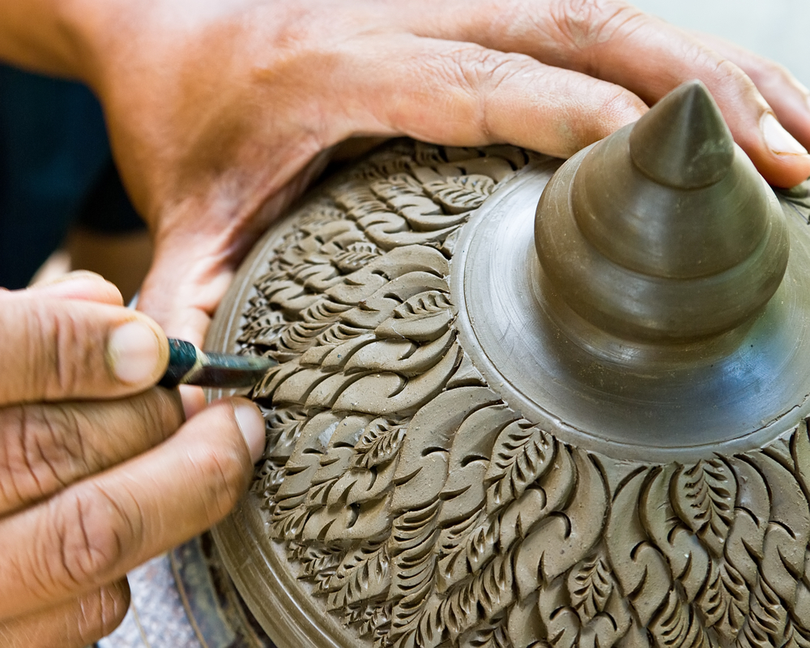
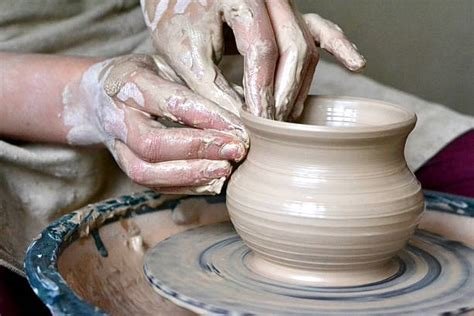
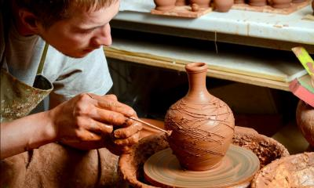
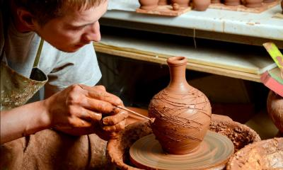
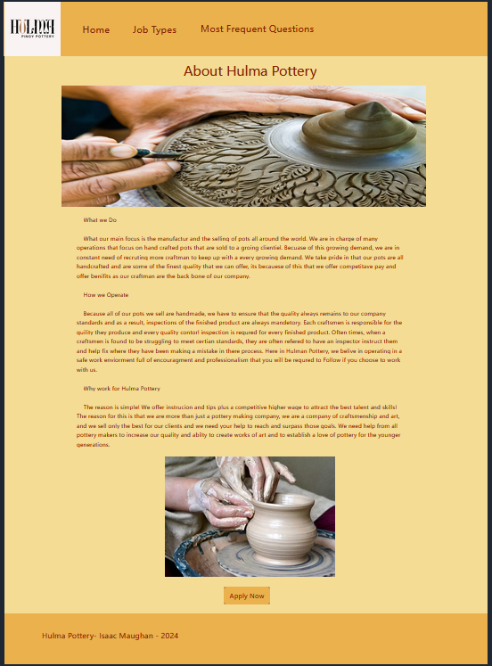
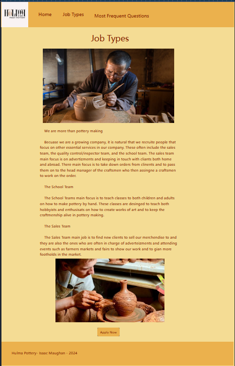

Overview
Purpose
[The main purpose is to advertize to new potential empoyees and to highlight on how working for this company can help them improve as craftsmen and how also gives them a knowlege of benifits and perks with working with this company.]
Audience
[Potential pottery craftsmen that are looking for a good comapany to work at ]
Dynamic elements
[Java Script will mostly be used as a simple backup and enhancer for this website.]
Branding
Website Logo
Style Guide
Color Palette
Palette URL: https://coolors.co/396e94-e7c24f-a43312-381d2a-aabd8c| Primary | Secondary | Accent 1 | Accent 2 |
|---|---|---|---|
| [#ebb14d] | [#f4dc94] | [#c84230] |
Typography
Heading Font: Fjalla One
Paragraph Font: Arial
Normal paragraph example
Here at Pinoy Pottery, we take in special pride in how we take good care of our employees and how we offer benifits and opportunities to advance your career as a master pottery craftsman.
Colored paragraph example
Many of the benifits of working at Pinoy Pottery is that we offer the chance of learning new methods in pottery masonry and the opportunity to grow as a master craftsman and enjoy the benifits of the company including special perks.
Navigation
Content
About Hulma Pottery
What we Do What our main focus is the manufactur and the selling of pots all around the world. We are in charge of many operations that focus on hand crafted pots that are sold to a groing clientiel. Becuase of this growing demand, we are in constant need of recruting more craftman to keep up with a every growing demand. We take pride in that our pots are all handcrafted and are some of the finest quality that we can offer, its becauese of this that we offer competitave pay and offer benifits as our craftman are the back bone of our company. How we Operate Because all of our pots we sell are handmade, we have to ensure that the quality always remains to our company standards and as a result, inspections of the finished product are always mandetory. Each craftsmen is responsible for the quility they produce and every quality contorl inspection is requred for every finished product. Often times, when a craftsmen is found to be struggling to meet certian standards, they are often refered to have an inspector instruct them and help fix where they have been making a mistake in there process. Here in Hulman Pottery, we belive in operating in a safe work enviorment full of encouragment and professionalism that you will be requred to Follow if you choose to work with us. Why work for Hulma Pottery The reason is simple! We offer instrucion and tips plus a competitive higher wage to attract the best talent and skills! The reason for this is that we are more than just a pottery making company, we are a company of craftsmenship and art, and we sell only the best for our clients and we need your help to reach and surpass those goals. We need help from all pottery makers to increase our quality and abilty to create works of art and to establish a love of pottery for the younger generations.
Images for the home page
 Job Typs
We are more than pottery making Becuase we are a growing company, it is natural that we recruite people that focus on other essential services in our company. These often include the sales team, the quality control/inspector team, and the school team. The sales team main focus is on advertizments and keeping in touch with cliants both home and abroad. There main focus is to take down orders from clinents and to pass them on to the head manager of the craftsmen who then
Images for the Page 2
 

Most Frequent questions
What are my Benifits? The Benifits that Hulma Pottery offers you is simple, you will recive a full helth plan coverage including dental. Maternity Leave is included only for married woman. Other benifits include a payed holidy and work leave that is offerd once every year. What are my work hours? The required amount of hours that you will be requred to work will be between 15-40 hours per week. You will have a small quota to meet on how many pots you will be requred to make per week. Is Creativity allowed? YES!!!!We actully encourage creativity in all of your works as a master craftsmen. All that we ask is that you are mindful of the quota and that any creative pots are not to time consuming from other smaller projects.
Wireframes
Create three wireframes for your site. One for each page and list them here
Home
[Any additional details about home that the wireframe does not make clear]
[Page 2]
[Any additional details about page 2 that the wireframe does not make clear]
